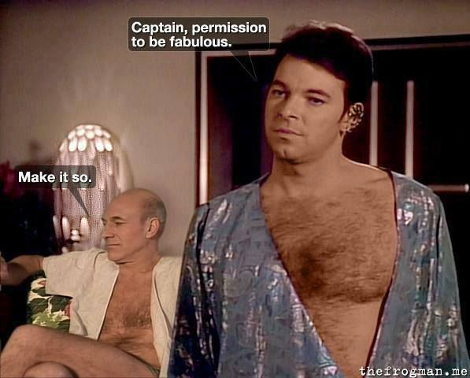

Star Trek
Universe (TV Series)
space
Eight television series make up the bulk of the Star Trek mythos: Original Series, Animated Series, Next Generation, Deep Space Nine, Voyager, Enterprise, Discovery, Short Treks and Picard. All the series in total amount to 772 episodes across 35 seasons of television.
- Star Trek: The Original Series (1966-1969)
- Star Trek: The Animated Series (1973-1974)
- Star Trek: The next Generation (1987-1994
- Captain Jean Luc Picard
- Jonathan Frakes

- Star Trek: Deep Space Nine (1993-1999)
- Star Trek: Voyager (1995-2001)
- Star Trek: Enterprise (2001-2005)
- Star Trek: Discovery (2017-)
- Star Trek: Picard (2020-9
Gul was a Cardassian military rank and title positioned in the Cardassian hierarchy between glinn and legate.
I prefer the title "gul". So much more hands-on than legate. And less pretentious than the other alternatives: president, emperor, first minister… Emissary."
– Dukat, 2373 ("Ties of Blood and Water")